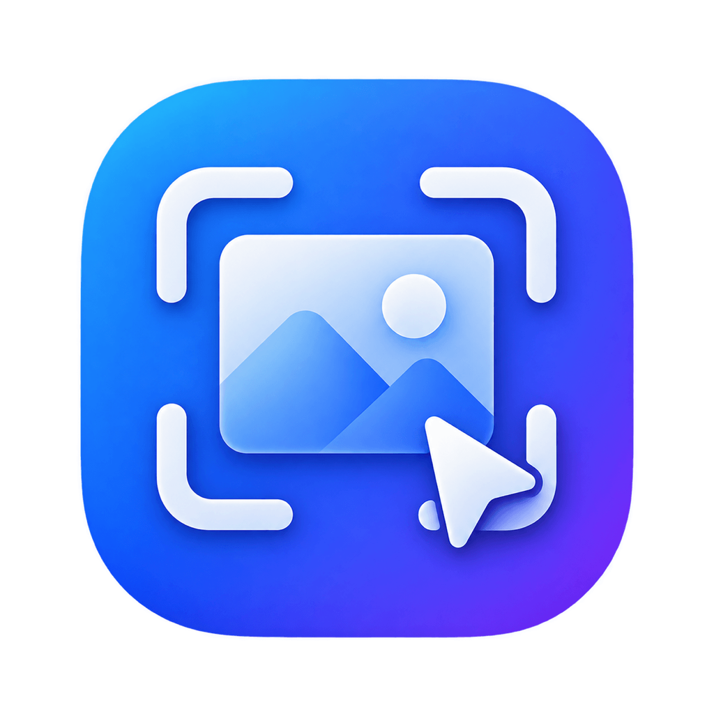
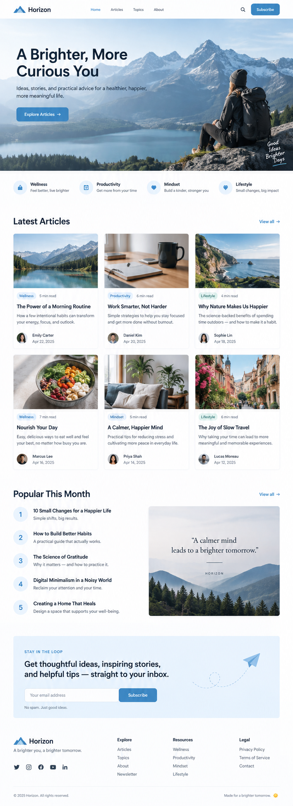

SnapFlow 是一款专为 macOS 设计的截图工具，支持区域截图、窗口截图、全屏截图和长截图，并提供强大的标注编辑功能。
macOS 14.0+ · Apple Silicon / Intel

全局快捷键，瞬间捕捉
丰富的标注工具
轻松捕获完整页面
支持多种格式
从基础截图到高级编辑，SnapFlow 提供了你需要的所有功能，让每一次截图都更简单、更专业。
自由拖拽，精准捕捉屏幕任意区域。
一键识别窗口，高效截取独立窗口。
多显示器支持，轻松捕获整个屏幕。
支持网页、文档、聊天等长内容截图。
箭头、文字、矩形、序号等多种标注工具。
将截图固定在桌面，便于随时对照参考。
SnapFlow 现已支持 macOS，立即下载，开启更高效的工作与表达方式。
macOS 14.0+ · Apple Silicon · Intel